おしながき
ほさかのそばの秘密
そばタンパクには、コレステロールを減少させ、体脂肪蓄積を抑制する働きがあります。
なかでもルチンには毛細血管を丈夫にする働きがあり、動脈硬化を予防する効果があるといわれ、近年注目されています。
ルチンはそば湯にもたっぷり含まれています。
変わりそば
田舎とセイロの他に、ごま・しそ・柚子・茶蕎麦、白雪、桜蕎麦など、旬の彩りと香りを盛り込んだ"変わり蕎麦"は、当店のオリジナルメニューです。
※桜蕎麦（3月～4月）、柚子切り（11月～3月）は季節限定メニューとなります。
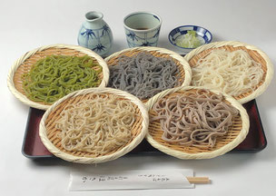
五色そば
2,540円
セイロと田舎に加え、当日の変わり蕎麦すべてをお召し上がりいただけます。
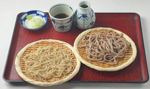
二色もり
920円
セイロと田舎の組み合わせになります。
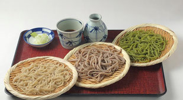
三色もり
1,460円
セイロと田舎に加え、変わり蕎麦から１種類お選びください。
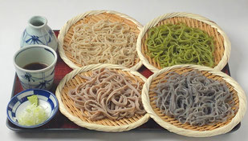
四色もり
2,000円
セイロと田舎に加え、変わり蕎麦から２種類お選びください。
冷たい そば・うどん
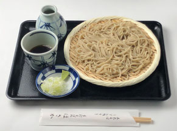
- もりそば
- 790円
- 小もりそば
- 460円
- ざるそば
- 900円
- きつねもり
- 950円
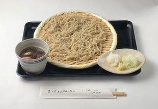
- 鴨汁そば
- 1150円
- 山菜もりそば
- 950円
- 冷やしカレーそば
- 990円
- おろしそば
- 1100円
- 納豆そば
- 1200円
- つけとろ
- 1130円
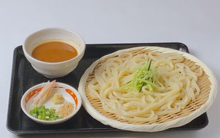
- 法論味（ほろみ）うどん（冷たいごまみそだれ）
- 1150円
- 冷やし山かけそば
- 1200円
- 冷やし鴨南蛮そば
- 1660円
- 鴨汁そば
- 1150円
- 茄子ときのこの鴨汁そば
- 1280円
- 冷やし揚玉そば
- 1030円
温かい そば・うどん
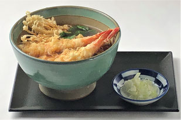
- かけそば
- 880円
- 揚玉そば
- 1030円
- 玉子とじそば
- 1110円
- 山菜そば
- 1030円
- 力そば
- 1110円
- きつねそば
- 1030円
- カレーそば
- 1130円
- 鴨カレーそば
- 1630円
- 天ぷらそば
- 1700円
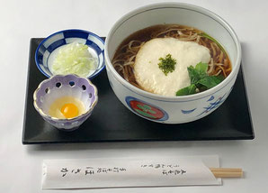
山かけそば
1290円
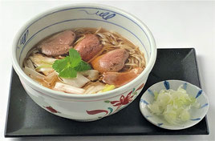
鴨南蛮そば
1,640円
よく炒めた鴨肉と長ねぎがそばによく合う人気のメニューです。
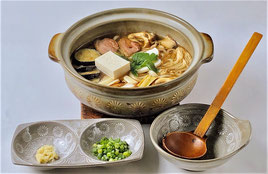
田舎なべ
2,040円
野菜、鴨肉を炒め、良く煮込んだほかほかあったかの煮込みうどんです。
おつまみ
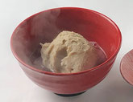
そばがき
660円
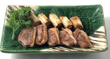
鴨焼き
950円
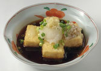
揚げ出し豆腐
630円
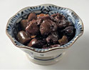
鶏レバーの生姜煮
640円
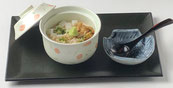
そばとろ
740円
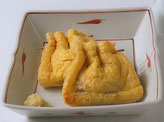
お袋焼き
660円
えび天ぷら
890円
野菜天ぷら
660円
天ぷら盛り合わせ
1750円
梅しそサンド
670円
甘エビ唐揚げ
640円
板わさ
570円
納豆サラダ
610円
もろみ豆腐
610円
揚げ出し茄子
570円
長芋千切り
540円
若鶏唐揚
660円
山菜
430円
釜揚豆腐
920円
冷奴
570円
鴨のくんせい
680円
もろきゅう
530円
ひな鳥皮揚げ
480円
甘味
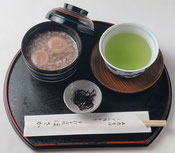
そばもちしるこ
570円
白玉粉とそば粉をブレンドしたやわらかいおもちと手作りあんこ（こしあん）。
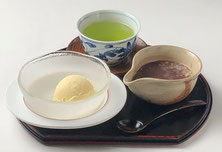
おしるこバニラ
570円
冷たいアイスと温かいおしるこがおいしい！冷たいおしるこもできます。
お飲み物
日本酒
久保田（新潟）千寿（せんじゅ）特別本醸造酒
冷酒一合 870円
四号瓶 3,460円
菊正宗（灘）本醸造
燗酒一合 670円
菊正宗（灘）樽酒
冷酒一合 700円
玉乃光（京都）純米吟醸
冷酒一合 770円
麒麟山（新潟県）辛口
冷酒一合 770円
升笑（兵庫県）（３００㎖）
1,300円
鶴齢（新潟県）本醸造酒
冷酒または熱燗一合 870円
嬉長（奈良県）
一合 770円
本格焼酎
そば焼酎（雲海） ボトル７２０㎖
2,710円
むぎ焼酎（二階堂）ボトル９００㎖
2,710円
本場鹿児島芋焼酎（財宝）
ボトル９００㎖ 2,710円
サワー・酎ハイ
そば湯割り
440円
レモンサワー割り
490円
ウーロンハイ割り
490円
ビール
キリン一番搾り生ビール
中ジョッキ 600円
小グラス 390円
瓶ビール
中瓶 670円
小瓶 390円
ノンアルコールビール
310円
ソフトドリンク
ウーロン茶
260円
レモンジュース
260円
オレンジジュース
260円